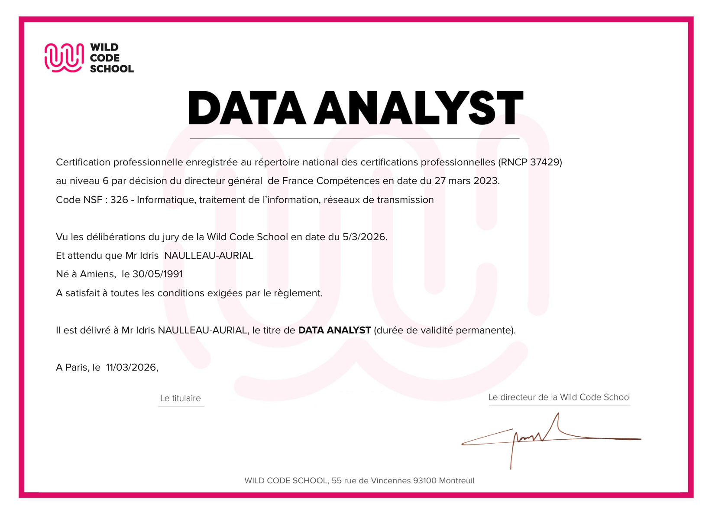

J’ai commencé par l’électronique avec un BEP puis un BAC PRO Systèmes électroniques industriels et domestiques.
Après le bac pro s’ensuivent plusieurs expériences professionnelles que je vous détaille dans les autres cartes de mon parcours.
Aujourd’hui, je suis diplômé Data Analyst à l’issue d’une formation intensive à la Wild Code School (septembre 2025 - février 2026).
Voir le diplôme Data Analyst

De cette période, je garde une grande rigueur méthodique et un pragmatisme dans la prise de décision.
Note aux recruteurs : mon parcours n'est pas linéaire, j'en ai conscience. Je suis cependant convaincu qu'il représente un véritable atout pour votre entreprise sur les métiers que je vise.
Après mes études, il fallait subvenir à mes besoins. Faute d'opportunités en informatique dans ma petite ville, j'ai commencé par une multitude d'emplois alimentaires.
En 2015, j'ai lancé mon activité freelance à plein temps sur la côte, à Lacanau Océan. Je réalisais de petits sites vitrines, du dépannage hardware et de la formation informatique.
De retour dans le Béarn, j'ai approfondi mes compétences en UI/UX Design pour compléter mon profil.
Mon plan a toujours été de travailler dans les métiers du numérique. Mais entre temps, le fait d'être en couple et d'avoir des responsabilités m'a poussé à choisir une voie plus stable que le freelancing. Et je n'avais alors ni les diplômes pour viser un poste intéressant, ni l'argent pour passer un diplôme.
Mon plan est donc devenu le suivant : 5 ans de CDI ouvrent droit à un Projet de Transition Professionnelle (PTP). J'ai donc pris un CDI de réceptionniste de nuit en hôtellerie pendant 5 ans, le temps d'amortir cet engagement, puis j'ai déclenché le PTP qui m'a permis de viser un BAC+3 Data Analyst.
Ce plan n'est pas terminé : mon objectif actuel est un BAC+5 dans le monde de la Data, via le contrat de professionnalisation que je recherche aujourd'hui.
J’ai choisi de viser un de ces deux métiers car ils correspondent parfaitement à ma façon de travailler : penser en systèmes et concevoir des solutions concrètes.
Ces deux métiers partagent l’essentiel : ils reposent sur les mêmes fondations techniques (Python, SQL, pipelines de données), la même exigence de mise en production fiable (tests, conteneurisation, CI/CD), et la même finalité : faire le pont entre la donnée brute et un service réellement utilisable, déployé et adopté sur le terrain.
J’ai construit ma trajectoire en deux étapes :
- Étape 1 : Une formation Data Analyst déjà réalisée, pour ancrer les fondamentaux (SQL, analyse, compréhension de la donnée).
- Étape 2 : ML ou Data Engineer en contrat de professionnalisation.
Pendant l’étape 1, j’ai validé 29 compétences réparties en 4 grands axes : collecte des données, traitement, modélisation et restitution.
Voir le livret de compétences validées
Livret officiel délivré par la Wild Code School à l’issue de la formation Data Analyst, niveau atteint pour chaque compétence.
Dans mon contrat pro, je cherche à progresser tout en produisant du résultat concret. Je cherche un cadre pour apprendre et m'améliorer en continu.
Concrètement, j'attends :
- Un environnement sain : communication respectueuse et ouverte, feedbacks constructifs, entraide.
- La possibilité de proposer des idées pour participer à l'amélioration des process.
Ma vision à long terme s'articule autour de la construction durable. Je me projette dans des organisations qui laissent une vraie place à l'autonomie et à la prise d'initiative.
Mon moteur, c’est la croissance : j’aime particulièrement les phases de construction, de mise en place et d’amélioration concrète d’un système. Je peux aussi m’inscrire dans la durée pour le fiabiliser, le documenter et le faire évoluer, à condition de continuer à apprendre et à relever de nouveaux défis.
Mon objectif à l'issue de l'alternance est de poursuivre en CDI dans le domaine où j'aurai été formé. Je cherche une équipe dans laquelle je peux contribuer à faire grandir un projet : construire utile, avec une logique de scaling, grandir en compétence, et apporter des résultats tangibles dans un cadre de confiance.
Je me suis mis aux échecs sur le tard. J'ai joué en club amateur puis en division régionale, ce qui m'a conduit à passer mon diplôme d'initiateur (D.I.F.F.E.) me permettant d'initier les échecs en club.
Voir le diplôme D.I.F.F.E.

Le sport fait partie intégrante de mon équilibre, c'est ce qui m'a véritablement inculqué la discipline et la régularité.
J'ai pratiqué la natation en compétition très tôt et ce jusqu'à mes 19 ans (Niveau N3 : ~1:18 au 100m Brasse, ~58s au 100m Libre).
Aujourd'hui, je pratique principalement l'escalade (niveau bloc 5C). Comme dans tout ce que j'entreprends, j'y cherche une progression constante et méthodique.
Ce qui me passionne dans cette discipline, c'est avant tout la transmission d'idées. J'aime comprendre comment une même information peut glisser ou marquer durablement selon la manière dont elle est mise en scène.
J'étudie ces sujets depuis plus de dix ans en autodidacte à partir des fondations de la dramaturgie.
Pour une démonstration concrète de ce que la dramaturgie peut faire dans un contexte pro, je vous invite à lire l'article « Cet article est un piège » publié dans la section Articles du portfolio.
Aujourd'hui je valide les acquis techniques de cette démarche côté production avec un Diplôme de Monteur Professionnel.
Voir le diplôme de Monteur Professionnel

Dans l'animation de communautés géantes, j'ai notamment plongé dans la gamification pure en gérant des milliers de joueurs sur un ARG (Alternate Reality Game) via l'un des plus gros serveurs Discord français.
Voulant automatiser certains process complexes, je me suis pris de fascination pour le développement ludique et pour toutes les mécaniques liées au jeu vidéo. J'ai par ce biais validé très concrètement une formation professionnelle de Game Designer, consolidant des bases indispensables en développement UX/Conception.
Voir le certificat Game Designer

Mon portrait en 11 chapitres
Cliquez sur une affiche pour lire le chapitre.